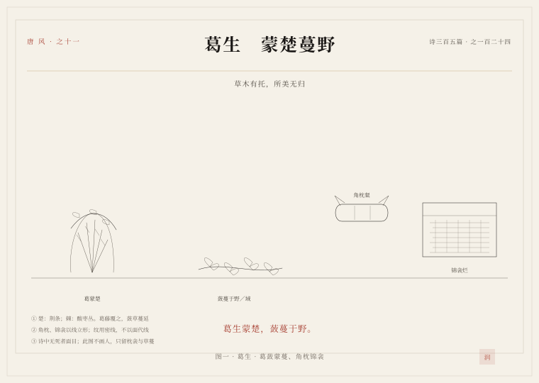
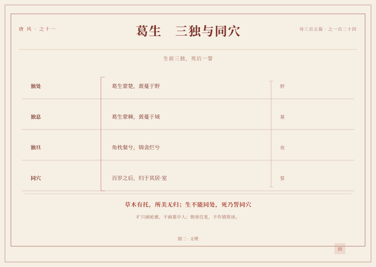

第一百二十四篇 葛生
唐风 · 之十一 SJ124
朗读 · 普通话
依经文原文朗读，章次不读出；配古琴底乐，不改速、不加拖腔。全库同一音色（豆包 TTS），非播音员录制。
一 解题
诗三判：
- 谁在说：丧偶者（旧题妇人指其夫）。所美之人亡此，无与为侣，独处、独息、独旦；夏之日、冬之夜，思之不已，誓百岁之后归于其居其室。
- 说什么事：前三章葛蔹蒙蔓、角枕锦衾，层层写独处之景；后二章夏日冬之夜倒章往复，收于同穴之誓。草木各有所托，所美独无所归；昼长夜永，只待死后同穴。
- 为何编在此：123 求贤未至，124
斯人已亡。唐风由「求人不到」转入「死生相隔」；倒数第二篇，以悼亡收束一编之深情。
《毛序》：“《葛生》，刺晋献公也。好攻战，则国人多丧矣。”
朱子《诗集传》：“兴也。蔹，草名。似栝楼。叶盛而细。蔓，延也。予美，妇人指其夫也。妇人以其夫久从征役而不归，故言葛生而蒙于楚，蔹生而蔓于野，各有所依托。而予之所美者，独不在是，则谁与，而独处于此乎。”
本库的看法：《葛生》两读并存，本库从「悼亡」读。
毛序「刺献公好攻战、国人多丧」是时代背景读法：征役攻战致丧，故多此悼辞；朱子读为「夫久从征役而不归」，尚未必即死。诗辞直写独处、独息、独旦与「百岁之后，归于其居／室」之誓，辞面已是死生相隔。本库以悼亡为正读，以「好攻战、国人多丧」为背景交代，不把诗读作战阵记事，也不把「征役不归」坐实为未死。
断语：草木有托，所美无归；生不能同处，死乃誓同穴。
先辨五事：「予美」是死者之私指，不是泛称美男子；「域」是茔域墓地，不是疆域；「角枕」「锦衾」是丧悼之具，不是喜庆嫁妆；「居」「室」指墓圹，不是居室；「百岁之后」是同穴之誓，不是来世重生。
二 经文
第一章
葛生蒙楚，蔹蔓于野。
予美亡此，谁与？独处！
第二章
葛生蒙棘，蔹蔓于域。
予美亡此，谁与？独息！
第三章
角枕粲兮，锦衾烂兮。
予美亡此，谁与？独旦！
第四章
夏之日，冬之夜。
百岁之后，归于其居！
第五章
冬之夜，夏之日。
百岁之后，归于其室！
分章：五章，章四句。
三 韵读
- 一章：楚、野、处，鱼部；「处」收，独处之寂。
- 二章：棘、域、息，职部；「息」收，独息之静。
- 三章：粲、烂、旦，元部；「旦」收，独至天明。
- 四章：夜、居；朱子叶「夜，羊茹反；居，姬御反」，鱼部相叶；「日」不入韵。
- 五章：日、室，质部；「夜」不入韵；「室」收，归于冢圹。
读法：前三章韵由鱼而职而元，景一层冷一层；后二章倒夏日冬夜之序，时序一倒，忧思往复不成歇。
四 字义与名物
- 葛：葛藤。蒙：覆盖。楚：荆条。蔹：蔹草，似栝楼，蔓生细叶。蔓：蔓延。野：原野。
- 棘：酸枣丛。域：茔域，墓地。
- 予美：我所美之人，指夫。亡此：不在此世（一说久役不归）。谁与：与谁为伴。独处／独息／独旦：独居、独息、独坐到天明。
- 角枕：以角为饰之枕，一说丧殓所用之枕。粲：华美鲜明。锦衾：锦缎被。烂：灿烂鲜明。
- 居：坟墓。室：冢圹。百岁之后：身死之后。
五 今译
葛藤长出，覆盖荆条；蔹草蔓延在原野。我所美之人亡逝于此，与谁作伴？独自居处！
葛藤长出，覆盖酸枣；蔹草蔓延在墓地。我所美之人亡逝于此，与谁作伴？独自息止！
角枕鲜明啊，锦衾灿烂啊。我所美之人亡逝于此，与谁作伴？独坐到天明！
夏日长，冬夜永。百年之后，归于他的墓圹！
冬夜永，夏日长。百年之后，归于他的墓室！
六 章旨
- 一章：写「野」与「独处」。葛蔹各有所托，人独无所伴。
- 二章：写「域」与「独息」。草蔓墓地，境已近丧；息止无人。
- 三章：写「枕衾」与「独旦」。物愈鲜明，人愈孤冷；坐到天明。
- 四章：写「夏日冬夜」与「其居」。昼长夜永，思之难遣；誓死后归其墓。
- 五章：倒「冬夜夏日」与「其室」。时序倒转，誓亦重申；归于墓室。
- 总收：生前三独——处、息、旦；死后一誓——居、室。草木有托，所美无归。
七 诗教
- 兴：以葛蒙楚、蔹蔓野起兴；草木各有所依附，反兴人无所依。
- 观：观悼亡之思如何由景入物、由物入誓。三章景物愈丽，孤怀愈深；后二章不写情，只写昼长夜永与同穴。
- 群：诗中死者与生者相对；一在墓域，一在独旦，中间无一人可与为伴。
- 怨：怨不指他人，只在「谁与」一问；攻战丧亡是背景，诗面是失侣之悲。
八 分寸与边界
- 不可把此诗读作战阵记事。诗面是悼亡，战丧是背景；一写成从军挽歌，「予美」之私就成军务公文。
- 不可把「予美」当泛称美男子。它是死者之私指；一泛称，独旦之怀就成品题人物。
- 不可把角枕、锦衾画成日常喜庆嫁妆。诗境是丧悼；一作婚物，粲烂之笔就成迎娶。
- 不可把「百岁之后」读作重生或来世。它是同穴之誓；一来世说，誓的分量就散。
- 不可把五章「冬之夜，夏之日」读作文字错简。倒章是有意往复；一当错简，忧思的循环就看不见。
- 不可替死者补肖像。诗中无五官面目；一画面容，悼亡就成写真。
九 存疑
- 诗旨：毛序「刺晋献公好攻战，国人多丧」；朱子读「妇人以其夫久从征役而不归」；后世多取为悼亡诗。三读并存，本库从悼亡，战丧为背景。
- 「亡此」：是已死，还是久役不归？郑笺偏「亡」，朱传偏「征役不归」；诗辞「百岁之后」近死誓，然旧说不一。
- 角枕锦衾：是生者日常枕衾，还是丧殓之具；旧说两存，诗中无服用场合可证。
- 作者：旧题妇人；是否男子悼妻、是否国人代悼，不可定。
- 「居」「室」：毛传「室犹居也」，郑笺「室犹冢圹」；所指同为墓圹，措辞微别。
- 倒章之义：四章先夏日后冬夜，五章倒之；是时序循环，还是忧思反复无已，旧说不一。
十 跨典
- 《论语·先进》：“颜渊死，门人欲厚葬之。”——悼亡之痛；此诗角枕锦衾、同穴之誓，同为死别之辞。
- 《礼记·檀弓上》：“孔子既得合葬于防。”——同穴合葬之礼；「归于其居」「归于其室」即此礼之誓。
- 《左传·庄公二十八年》：晋伐骊戎，后骊姬谗逐群公子；——献公听谗攻战之事，毛序「好攻战」之背景。诗不指此事，事为诗之背景。
- 《诗经·唐风·鸨羽》（SJ121）：“王事靡盬，不能蓺稷黍。”——征役之苦；与此诗「从征役而不归」相表里，一叹养父母不得，一叹失侣无依。
- 《诗经·邶风·绿衣》（SJ027）：“绿兮丝兮，女所治兮。”——悼亡祖构；彼睹物思人，此睹枕衾思人。
十一 双卡与图
双卡六对：
| 予美（死者私指） |
予美（泛称美男） |
| 域（茔域墓地） |
域（疆域） |
| 角枕锦衾（丧悼之具） |
角枕锦衾（喜庆嫁妆） |
| 居（墓圹） |
居（居室） |
| 百岁之后（同穴之誓） |
百岁之后（来世重生） |
| 独旦（独坐至天明） |
独旦（独宿新婚） |

图一 · 葛生 葛蔹蒙蔓、角枕锦衾

图二 · 葛生 三独与同穴之誓
读图三处：
- 葛蔹：图一左葛藤覆楚、蔹草蔓野，线条只描不填；草木有托，对照中间空处。
- 枕衾：图一角枕、锦衾以线立形，粲烂只作短线纹，不施面；丧悼之具，画成色块即面代线。
- 同穴：图二左三行「处／息／旦」，右一虚圹标「居／室」；生者未画全，圹只画轮廓，不画墓中人。